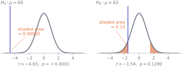
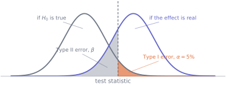
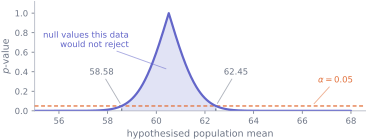

9. Hypothesis tests
Statistics · Unit 9
Why this unit is here
A hypothesis test answers one narrow question: if nothing were going on, how often would I see data at least as extreme as this? That is a useful thing to know and it is much less than people take it for.
You need this unit for two reasons. Every paper you read for the rest of your degree reports \(p\)-values, and you cannot evaluate a claim you cannot decode. And the standard misreadings — that \(p\) is the probability the hypothesis is wrong, that a small \(p\) means a large effect, that a large \(p\) means no effect — are so widespread that being able to spot them is a genuine professional advantage.
The unit’s other job is to show that a test and a confidence interval are the same calculation. Once you have seen that, the interval is almost always the better thing to report.
9.1 Before you start
You should be able to:
- build a confidence interval for a mean and say what the 95% refers to — S8;
- compute a standard error and say why it is not a standard deviation — S7;
- write a conditional probability and keep it the right way round — S4.
Quick check. A 95% confidence interval for a mean comes out as \((58.6, 62.4)\). Is the value 65 a plausible value for the population mean?
TipShow the answer
Not on this evidence: 65 lies outside the interval, so it is not among the values the data are consistent with at the 95% level.
You have just performed a hypothesis test. The rest of this unit is that sentence, made precise and given a number.
9.2 The idea
Take the 57 students who came from a life-sciences background. S8 found their mean final score to be 60.51 with a 95% interval of \((58.58, 62.45)\).
Now suppose someone claims the population these students came from has a mean of 65 — the cohort’s overall average. The logic of a test is:
- Assume the claim is true. Call it the null hypothesis, \(H_0: \mu = 65\).
- Work out how the data would behave if it were. From S7, sample means from such a population would be spread around 65 with a standard error of about 0.97.
- See how far out the observed data actually falls.
- Report how often a sample that extreme or more would occur if the claim were true. That number is the \(p\)-value.
Against \(H_0: \mu = 65\), data this far out would occur about twice in a hundred thousand samples. Against \(H_0: \mu = 62\), it would occur about thirteen times in a hundred. The first claim looks hard to sustain; the second is perfectly consistent with what we saw.
Notice what has and has not been established. We have a statement about how often data like this arises if the null is true. We have said nothing about how likely the null is, and nothing at all about the second null being correct — only that these 57 students give no reason to doubt it.
9.3 The mechanics
The four pieces
Every test in the subject has the same four parts.
- A null hypothesis \(H_0\): a specific claim precise enough to compute with. “The mean is 65”, “the two groups have the same mean”, “the slope is zero”.
- An alternative \(H_1\), which fixes what counts as extreme. Two-sided (\(\mu \ne 65\)) is the default and the one to use unless you can justify otherwise.
- A test statistic: a number summarising the distance between data and null, scaled by its own uncertainty. For a mean, \[ t = \frac{\bar{x} - \mu_0}{s/\sqrt{n}} . \]
- A null distribution: where that statistic would fall if \(H_0\) were true. For the \(t\) statistic it is the \(t\) distribution with \(n - 1\) degrees of freedom, the same one S8 used to set interval widths.
The \(p\)-value is the probability, computed under the null, of a test statistic at least as extreme as the observed one.
What a p-value is, in symbols
\[ p = P\bigl(\text{data at least this extreme} \;\bigm|\; H_0 \text{ true}\bigr) \]
Everything that goes wrong with \(p\)-values goes wrong by moving the bar. It is not \(P(H_0 \text{ true} \mid \text{data})\) — that is the reversal of S4, and getting from one to the other would need a prior probability that the test never supplies.
Three consequences worth stating explicitly.
A small \(p\) does not mean a large effect. It means the effect is distinguishable from zero given your sample size. With the cohort’s spread of about 7.3 marks and 100,000 observations, a difference of a tenth of a mark gives \(t = 4.3\) and \(p \approx 10^{-5}\) — a decisive-looking result about a difference nobody could care about.
A large \(p\) does not mean no effect. It means your data cannot rule the null out. An underpowered study produces large \(p\)-values whether or not anything is going on, which is why “we found no significant difference” is nearly uninformative without the interval next to it.
\(1 - p\) is not the probability the alternative is true. It is not a probability about any hypothesis at all.
Two ways to be wrong
Fix a threshold \(\alpha\) — conventionally 0.05 — and reject \(H_0\) when \(p < \alpha\). Two mistakes are then possible.
| \(H_0\) is true | \(H_0\) is false | |
|---|---|---|
| reject \(H_0\) | Type I error, rate \(\alpha\) | correct |
| do not reject | correct | Type II error, rate \(\beta\) |
Power is \(1 - \beta\): the probability of detecting a real effect of a given size. It rises with the sample size and with the size of the effect, and falls as the data get noisier.

The picture puts the whole 5% in the right tail, a one-sided test, to keep it readable; the two-sided default splits it, 2.5% in each tail. Note the asymmetry the picture makes obvious. You choose \(\alpha\); you do not choose \(\beta\), which follows from \(\alpha\), the sample size and the true effect. Shrinking \(\alpha\) to be safer moves the line right and makes \(\beta\) worse.
A test and an interval are the same calculation
A two-sided test at level \(\alpha\) rejects \(H_0: \mu = \mu_0\) exactly when \(\mu_0\) falls outside the \((1-\alpha)\) confidence interval. They are not two methods that usually agree; they are one calculation read two ways.
\[ \left|\frac{\bar{x} - \mu_0}{s/\sqrt{n}}\right| > t^{*} \quad\Longleftrightarrow\quad \mu_0 \notin \left[\bar{x} - t^{*}\frac{s}{\sqrt{n}},\; \bar{x} + t^{*}\frac{s}{\sqrt{n}}\right] \]
(The brackets are square because a \(\mu_0\) sitting exactly on an endpoint gives \(p\) exactly equal to \(\alpha\), and \(p < \alpha\) does not reject. It is a boundary case of no practical consequence and of some pedagogical value: the two statements match exactly, not approximately.)
Both sides are the same inequality rearranged. This matters practically: the interval contains everything the test would tell you and the effect size and its precision, which the test throws away. Report the interval.
9.4 Worked example
Testing the life-sciences mean, and watching the duality hold.
import numpy as np
import pandas as pd
from scipy import stats
cohort = pd.read_csv("data/cohort.csv")
usable = cohort.dropna(subset=["background", "final_score"])
usable = usable[usable["final_score"].between(0, 100)]
life = usable[usable["background"] == "Life sciences"]["final_score"]
n = life.size
mean, se = life.mean(), life.std(ddof=1) / np.sqrt(n)
print(f"n = {n} mean = {mean:.4f} sd = {life.std(ddof=1):.4f} se = {se:.4f}")
t_star = stats.t.ppf(0.975, n - 1)
low, high = mean - t_star * se, mean + t_star * se
print(f"95% interval for the mean: ({low:.4f}, {high:.4f})")n = 57 mean = 60.5123 sd = 7.2893 se = 0.9655
95% interval for the mean: (58.5782, 62.4464)Test the claim that this population’s mean is 65, by hand and then with the library:
null = 65
t_stat = (mean - null) / se
p_value = 2 * stats.t.sf(abs(t_stat), n - 1) # sf = upper-tail area, 1 - cdf; doubled for two sides
print(f"by hand : t = {t_stat:.4f} p = {p_value:.3e}")
print(f"scipy : {stats.ttest_1samp(life, null)}")by hand : t = -4.6481 p = 2.081e-05
scipy : TtestResult(statistic=-4.648132564933887, pvalue=2.080866200706556e-05, df=56)A \(p\) of \(2 \times 10^{-5}\): if this population really had a mean of 65, a sample of 57 landing this far away would happen about twice in a hundred thousand studies. That is strong evidence against the claim.
The sentence to write down, though, is not the \(p\)-value. It is: the mean final score of life-sciences students is estimated at 60.5 marks (95% CI 58.6 to 62.4), about 4.8 marks below the cohort average of 65.3. That reports the size of the difference, its uncertainty, and — implicitly — the test.
Now the duality. Test every possible null value from 55 to 68 and see where the \(p\)-value crosses 0.05:
for candidate in [58.0, low, 59.0, 60.5, 62.0, high, 63.0]:
t_c = (mean - candidate) / se
p_c = 2 * stats.t.sf(abs(t_c), n - 1)
verdict = "reject" if p_c < 0.05 else "do not reject"
print(f"H0: mu = {candidate:>8.3f} p = {p_c:.5f} {verdict}")H0: mu = 58.000 p = 0.01183 reject
H0: mu = 58.578 p = 0.05000 do not reject
H0: mu = 59.000 p = 0.12290 do not reject
H0: mu = 60.500 p = 0.98990 do not reject
H0: mu = 62.000 p = 0.12897 do not reject
H0: mu = 62.446 p = 0.05000 do not reject
H0: mu = 63.000 p = 0.01264 reject
The two interval endpoints are in that list, and both come out at \(p\) exactly 0.05 — the curve crosses the threshold precisely there and nowhere else. Every null inside the interval survives; every null outside it is rejected. One calculation, two presentations.
Finally, power, because it is the thing that decides whether a non-significant result means anything at all.
sd = life.std(ddof=1)
effect = 2.0 # a difference of 2 marks
print(f"power to detect a {effect:.0f}-mark difference (sd {sd:.2f}, alpha 0.05):")
for size in [10, 30, 57, 100, 200]:
critical = stats.t.ppf(0.975, size - 1)
# if the effect is real, t follows a "noncentral" t, shifted by ncp standard errors
ncp = (effect / sd) * np.sqrt(size)
power = stats.nct.sf(critical, size - 1, ncp) + stats.nct.cdf(-critical, size - 1, ncp)
print(f" n = {size:>3} power {power:.3f}")power to detect a 2-mark difference (sd 7.29, alpha 0.05):
n = 10 power 0.122
n = 30 power 0.306
n = 57 power 0.530
n = 100 power 0.776
n = 200 power 0.971At \(n = 57\) the study has a 53% chance of detecting a real 2-mark difference — barely better than a coin toss, and worse than that for anything smaller. If such a study reports \(p = 0.3\), it has told you almost nothing, and saying “there is no difference” would be a serious overstatement.
9.5 Try it yourself
Exercise 1 A sample of 40 has mean 12.4 and standard deviation 3.0. Test \(H_0: \mu = 11\) against a two-sided alternative, using \(t^{*} = 2.023\).
- Compute the standard error and the test statistic.
- Would you reject at \(\alpha = 0.05\)?
- Give the 95% interval, and check the two answers agree.
TipShow the solution
\(\text{SE} = 3.0/\sqrt{40} = 0.4743\), so \(t = (12.4 - 11)/0.4743 = 2.951\).
\(|t| = 2.951 > 2.023\), so reject at the 5% level. (The exact \(p\)-value is about 0.005.)
\(12.4 \pm 2.023 \times 0.4743 = 12.4 \pm 0.960\), giving \((11.44, 13.36)\). The null value 11 lies outside it, which is the same conclusion — as it must be, since the two calculations are the same inequality.
The interval is the better report: it says the data are consistent with any mean between 11.4 and 13.4, where the test says only “not 11”. (As always, the 95% belongs to the procedure — S8 — not to this particular pair of endpoints.)
Exercise 2 Two studies test the same drug.
- Study A: 40 patients, mean improvement 5.0 points, 95% CI \((0.2, 9.8)\), \(p = 0.04\).
- Study B: 4,000 patients, mean improvement 0.3 points, 95% CI \((0.1, 0.5)\), \(p = 0.003\).
Which shows the stronger evidence, and which shows the larger effect?
TipShow the solution
Study B has the smaller \(p\)-value and by far the smaller effect. Its 0.3-point improvement is estimated precisely: the whole interval lies between 0.1 and 0.5, so the data have ruled out anything larger. Whether an improvement of that size is worth having is a clinical question, not a statistical one — but the interval is what puts the question in front of you, and the \(p\)-value of 0.003 does not. The tiny \(p\) reflects the sample size.
Study A shows the larger effect and knows almost nothing about it. The interval runs from 0.2 to 9.8, so the data are consistent with an improvement that is negligible and with one that is large. Its \(p = 0.04\) crosses the conventional threshold and tells you very little.
The lesson: \(p\)-values rank evidence against a null, not effects by importance. Read the interval, in the units of the thing measured, and ask whether the values it contains would change what anyone does.
Exercise 3 A researcher runs a test, gets \(p = 0.08\), and writes: “there is a 92% chance the treatment works”. Identify every error in that sentence and write a correct one.
TipShow the solution
Three errors, stacked.
The conditional is reversed. \(p\) is the probability of data this extreme if the null is true, not the probability that the null is true given the data. Getting from one to the other requires a prior — see S4.
\(1 - p\) is not the probability of the alternative. Even if \(p\) were a probability about the null — it is not — its complement would be about “not the null”, which includes effects of every size, most of them uninteresting.
“Works” is not what was tested. The null was almost certainly “no difference”. Rejecting it would be evidence of a difference — not proof, since a test at 5% rejects a true null 5% of the time — and a difference is not the same thing as a benefit worth having.
Only the first two errors can be shown from the sentence alone; the third assumes the usual null. With only \(p = 0.08\) to go on, a correct sentence is “data at least this extreme would arise 8% of the time if there were no effect”, and a good answer says the estimate and its interval are missing. A full sentence, with placeholders for the numbers the original omitted: “The estimated effect was X units (95% CI \(a\) to \(b\)). Data this extreme would arise 8% of the time if the treatment had no effect at all, so these data do not rule out a null effect. What else they fail to rule out can be read off the interval — which is why it, and not the \(p\)-value, is the thing to report.”
9.6 Check it in Python
The claim that a \(p\)-value is a probability computed under the null is testable: if the null really is true, \(p\)-values should be spread evenly between 0 and 1, and 5% of them should fall below 0.05.
rng = np.random.default_rng(2026)
trials, size = 20_000, 30
samples = rng.normal(loc=50, scale=10, size=(trials, size)) # null is TRUE: mu = 50
t_stats = (samples.mean(axis=1) - 50) / (samples.std(axis=1, ddof=1) / np.sqrt(size))
p_values = 2 * stats.t.sf(np.abs(t_stats), size - 1)
print(f"p below 0.05 : {(p_values < 0.05).mean():.4f} (should be 0.05)")
print(f"p below 0.10 : {(p_values < 0.10).mean():.4f} (should be 0.10)")
print(f"p below 0.50 : {(p_values < 0.50).mean():.4f} (should be 0.50)")p below 0.05 : 0.0494 (should be 0.05)
p below 0.10 : 0.0963 (should be 0.10)
p below 0.50 : 0.4965 (should be 0.50)That is what \(\alpha = 0.05\) buys: when nothing is going on, one test in twenty comes out significant anyway. Those thousand “significant” results are not mistakes in anyone’s arithmetic — they are the designed behaviour of the procedure, and they are why S12 worries about how many tests were run.
Now the duality, checked exactly rather than by eye:
for candidate in np.linspace(55, 68, 27):
rejects = 2 * stats.t.sf(abs((mean - candidate) / se), n - 1) < 0.05
outside = not (low <= candidate <= high)
assert rejects == outside, f"disagreement at mu0 = {candidate}"
print(f"test and interval agree at all 27 candidate values in [55, 68]")
print(f"interval ({low:.4f}, {high:.4f})")test and interval agree at all 27 candidate values in [55, 68]
interval (58.5782, 62.4464)Now generate data where the null is definitely false — a real effect of 2.5 marks — and run two thousand studies of the size we actually have:
truth, sd_pop = 62.5, 7.29 # the real mean is 2.5 marks above 60
studies = rng.normal(loc=truth, scale=sd_pop, size=(2000, 57))
p_values = stats.ttest_1samp(studies, 60.0, axis=1).pvalue
missed = np.flatnonzero(p_values >= 0.05)
print(f"real effect of 2.5 marks, n = 57: missed by {missed.size} of 2000 "
f"studies ({100*missed.size/2000:.1f}%)")real effect of 2.5 marks, n = 57: missed by 577 of 2000 studies (28.9%)Nearly three studies in ten find nothing, and every one of them was correctly conducted on data containing a real effect. Take one of those studies and assert what a careless reader would assume — that a real effect shows up:
unlucky = studies[missed[0]]
result = stats.ttest_1samp(unlucky, 60.0)
assert result.pvalue < 0.05, (
f"the null (mu = 60) is false by 2.5 marks, yet this study of 57 gives "
f"p = {result.pvalue:.3f} and would 'find no significant difference'"
)--------------------------------------------------------------------------- AssertionError Traceback (most recent call last) Cell In[11], line 3 1 unlucky = studies[missed[0]] 2 result = stats.ttest_1samp(unlucky, 60.0) ----> 3 assert result.pvalue < 0.05, ( 4 f"the null (mu = 60) is false by 2.5 marks, yet this study of 57 gives " 5 f"p = {result.pvalue:.3f} and would 'find no significant difference'" 6 ) AssertionError: the null (mu = 60) is false by 2.5 marks, yet this study of 57 gives p = 0.071 and would 'find no significant difference'
A non-significant result is consistent with no effect and with an effect the study was too small to see. The \(p\)-value alone cannot tell you which; only the interval and the power can.
9.7 Common wrong turns
Where this usually goes wrong
- Reading \(p\) as the probability that the null is true
- \(p\) is computed assuming the null. It is \(P(\text{a statistic at least this extreme} \mid H_0)\), and turning that into \(P(H_0 \mid \text{data})\) needs a base rate the test does not have. This is S4’s error in its most expensive form. (Note the “at least this extreme”: for continuous data the probability of the exact values you observed is zero, so a \(p\)-value could not be that.)
- Reading a non-significant result as “no effect”
- It means the data could not rule out the null. An underpowered study cannot rule out anything. Write “no significant difference was found (\(p = 0.3\); the 95% interval runs from \(-4\) to \(+9\), so effects of either sign remain plausible)” — and notice how much more that says.
- Confusing statistical significance with importance
- A large enough sample makes any non-zero difference significant. The interval, in real units, is what tells you whether the difference matters.
- Choosing one-sided after seeing the data
- A one-sided test pointing the way the data happen to lean halves the \(p\)-value (pointing the other way, it gives \(1 - p/2\)), which is exactly why the direction must be decided before looking. Choosing the direction afterwards is not a test at 5%; it is a test at 10% reported as 5%.
- Testing many things and reporting the smallest \(p\)
- Twenty independent tests on pure noise produce a significant result about two-thirds of the time. If you ran many tests, say so and adjust — the machinery is in S12.
- Treating \(\alpha = 0.05\) as a law of nature
- It is a convention, and a fairly arbitrary one. There is nothing meaningfully different about \(p = 0.049\) and \(p = 0.051\), and reporting one as a discovery and the other as nothing is a failure of judgement, not a rule.
- Reporting the test instead of the estimate
- The test discards the effect size and its precision, which are the two things a reader needs. Give the estimate with its interval; the test is a corollary.
9.8 Check yourself
Answers are at the foot of the page. Give a reason as well as an answer.
A study reports \(p = 0.03\). Which statement is correct?
- There is a 3% chance the null hypothesis is true
- There is a 97% chance the alternative is true
- If the null were true, data at least this extreme would arise 3% of the time
- The effect is small but real
A \(p\)-value is calculated by assuming the null is true. Can it then be the probability that the null is true?
The same problem: the \(p\)-value assumes the null, so it cannot put a probability on the alternative.
A \(p\)-value says nothing about the size of an effect. A large enough study makes a tiny effect significant.
- A 95% confidence interval for a difference is \((-1.2, 8.6)\). Without computing anything, what do you know about the two-sided \(p\)-value for \(H_0: \text{difference} = 0\)?
- You lower \(\alpha\) from 0.05 to 0.01. What happens to the two error rates?
- In the simulation above, 5% of tests were significant when the null was true. Were those tests computed wrongly?
- Study A: \(p = 0.049\). Study B: \(p = 0.051\). How different is the evidence?
TipShow the answers
(c). That is the definition. (a) and (b) reverse the conditional; (d) confuses significance with size and cannot be read off a \(p\)-value at all — the effect could be enormous or trivial.
It is greater than 0.05. Zero lies inside the interval, and by the duality a two-sided test rejects exactly when the null value falls outside. You cannot tell how much greater without more information — an interval that only just contains zero corresponds to a \(p\) a little above 0.05, one that contains it centrally to a \(p\) near 1.
The Type I error rate falls to 1%, by construction — that is what \(\alpha\) means. The Type II error rate rises, because the threshold has moved further out and more real effects now fall short of it. You cannot reduce both at once without more data.
No. Every one was computed correctly from data generated under the null. Five percent false positives is what a 5% threshold is. A procedure that never gave a false positive would also never detect anything.
Essentially not at all. The two studies provide near-identical evidence. The threshold is a convention placed at 0.05, and nothing about the underlying quantity changes as you step across it. Treating one as a finding and the other as a null result is the single most damaging convention in applied statistics, and it is a large part of why S12 exists.